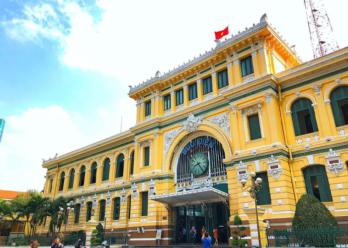
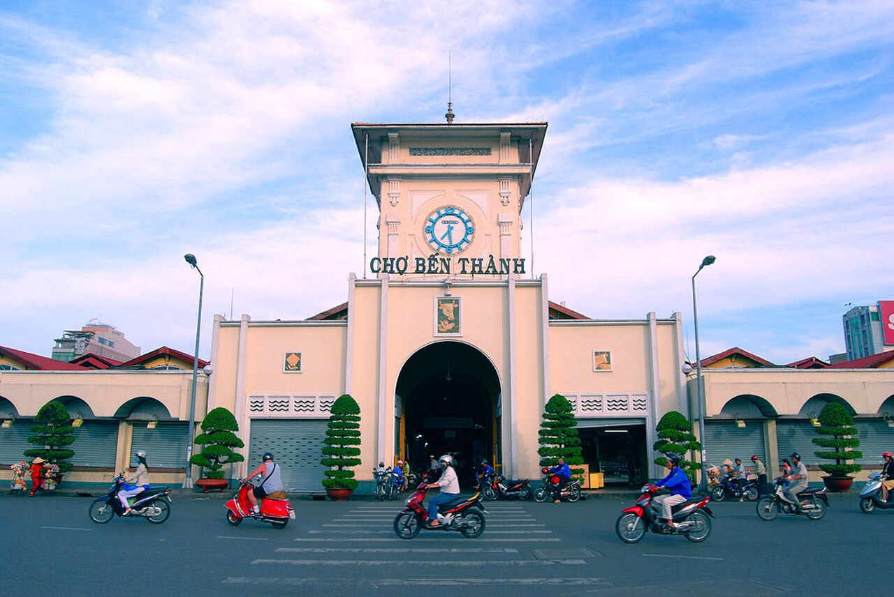
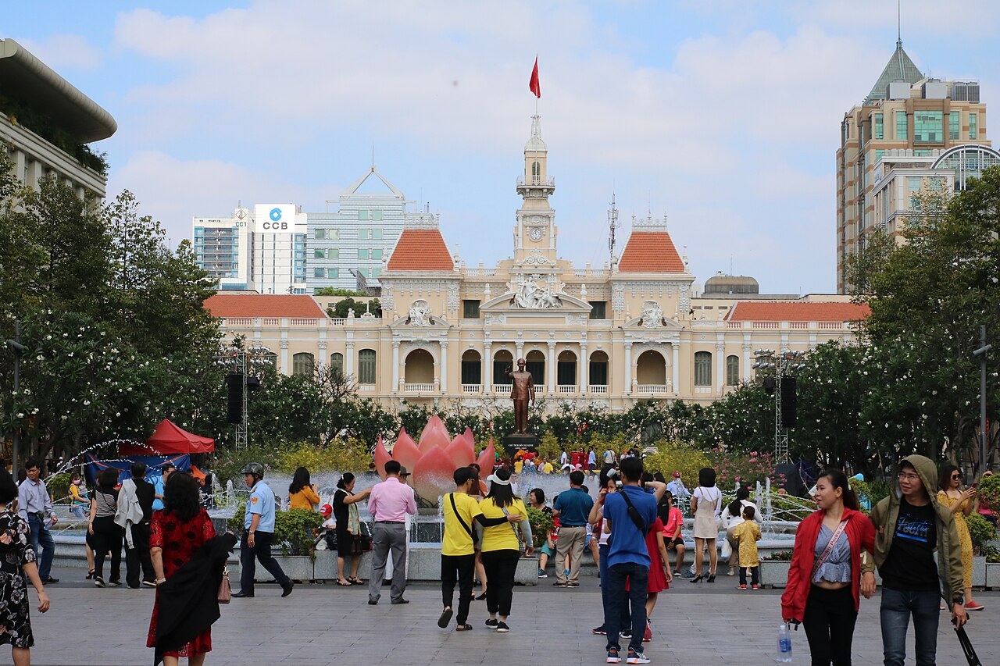

01 中央郵局 Bưu điện Trung tâm Sài Gòn
中央郵局是市中心的代表性歷史建築之一。造訪時可觀察外觀與建築細節，與周邊街區一起安排短程散步。
- 推薦理由
- 適合喜歡建築、拍照或想寄張明信片的人，作為一天行程的起點。
- 家庭旅遊提醒
- 它也是公共服務空間，拍照時別阻擋動線；可進入範圍、郵務與商店服務以現場為準。
資料來源：官方：市中心代表地標
03 / SOUTHERN VIETNAM
位於越南南部的胡志明市，把老建築、市場與現代街景放在同一座城市裡。從中央郵局開始，逛一段濱城市場，再到阮惠步行街看燈光與人群，適合喜歡吃逛和城市散步的旅人。
市中心用短路線串連，午後安排室內休息，晚上再出門走一段。

A CLOSER LOOK
挑喜歡的體驗，留一點時間給休息與沿途風景。

中央郵局是市中心的代表性歷史建築之一。造訪時可觀察外觀與建築細節，與周邊街區一起安排短程散步。
資料來源：官方：市中心代表地標

濱城市場是胡志明市的經典購物地點，可把逛商品、找小吃與認識街區排在一起。每個攤位的價格與商品不同，先詢問再購買。
資料來源：官方：Ben Thanh Market

阮惠步行街位於市中心，從市政建築一帶往河岸延伸。白天看建築，入夜後則可觀察城市燈光與街頭生活。
MAKE TIME FOR THE JOURNEY
以下為編輯行程建議，並非固定套裝路線；請依天氣、同行者體力與實際預訂調整。
趁體力充足時看建築，拍照後找地方用餐。
只逛有興趣的區域，避開把整天排成連續步行。
沿短路線看街景與燈光，再安排回住宿的交通。
每一天保留一個可以省略的安排，比趕完清單更容易享受旅行。
BEFORE YOU GO
交通概況參考：Vietnam Tourism：Ho Chi Minh City，更新日期：2026-11-15。班次、費用及接送服務另行確認。
以上為規劃建議，不是場館設施或服務保證。
WHERE NEXT?
內容更新：。行程、推薦理由與家庭提醒為編輯建議；票價、場次及開放狀況請於出發前向官方確認。照片為景觀紀錄，不代表當日天氣或最新設施。
網路圖片縮小尺寸並作版面裁切；CC BY-SA 圖片的衍生版本沿用相同授權。使用者提供照片依其提供脈絡標示，來源狀態如實記錄。